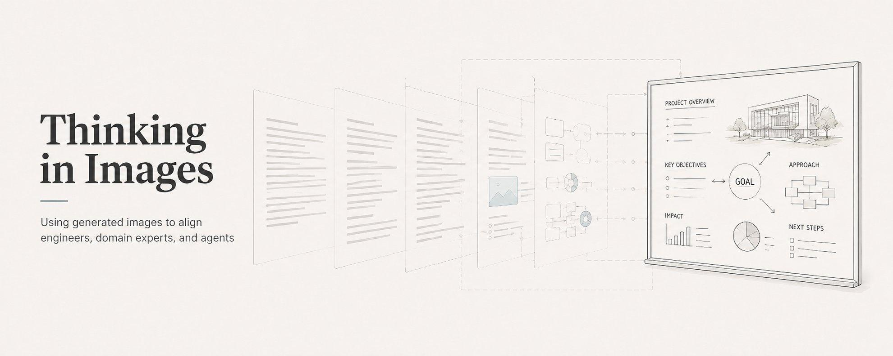
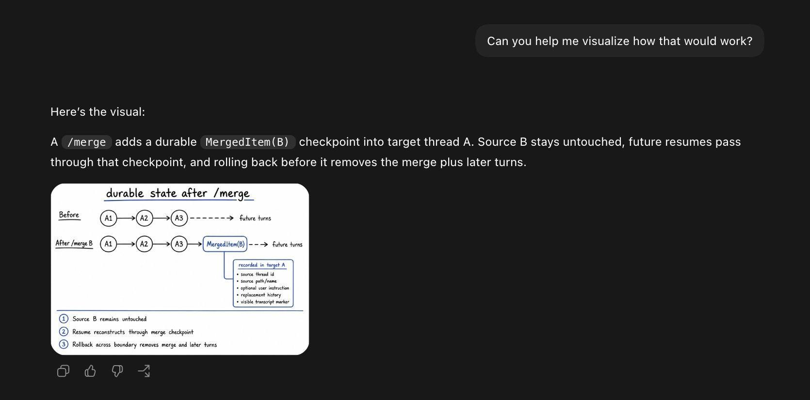
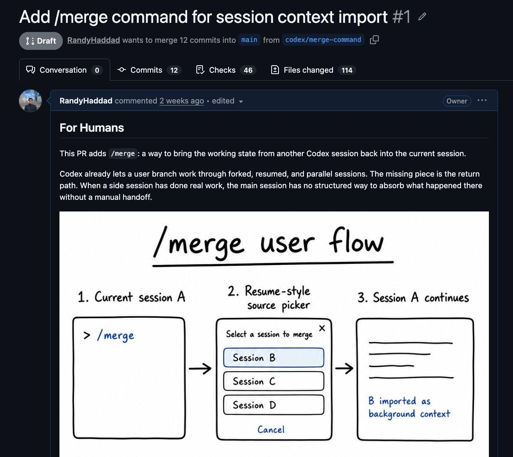
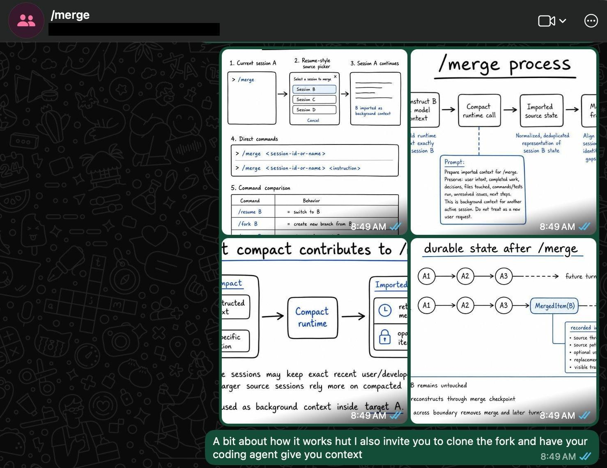

Thinking in Images
A practical note on using GPT-Image-2.0 inside engineering work
I've started splitting some PR descriptions into two sections: one for humans, one for agents.
The agent section is text. The human section is often an image.
And it doesn't stop at PRs. When an agent writes a 500-line design spec, I ask it to generate an image of what we've converged to.
Here's an example of GPT generating an image to explain a fork I'm pushing to the Codex CLI:

Now yes, markdown is a great artifact for agents. But it's still text, and text is linear. That breaks down when the important part is a set of relationships you need to inspect at once. This is where text is often the wrong modality.
Images are nonlinear. They turn the spec into something I can explore spatially.
For Humans / For Agents
One recent PR made this concrete.

The change was a /merge command for Codex: bring the working state from one session back into the session you want to continue.
I asked Codex to generate a whiteboard-style image of the workflow, copied it into the PR. That's it.
It also forces the PR to condense around what can fit in a single image, which is useful because if the core idea needs more than one image to explain, it may actually be two PRs.
The image shows the thing people, the humans, need to judge.
What images can carry
There's a popular argument, made by Thariq Shihipar in The Unreasonable Effectiveness of HTML, that HTML is the new Markdown for agent output, and it's partly about information richness. HTML can hold tables, CSS, SVG, scripts, interactions, workflows, spatial data, and images in one artifact.
The value I get from generated images is different. They make some relationships easier to inspect.
Larkin and Simon have a useful framing for this:
Diagrams and sentences can be informationally equivalent, but computationally different. The same idea can be much easier to reason about when the relationships are spatial instead of sequential.
For generated images, the useful properties are:
- Information hierarchy - what the eye reads first.
- Coherence - whether the parts behave like one system.
- Signal-to-noise - how much of the canvas carries useful information.
- Interference - whether one element conflicts with, or confuses another.
That is why images force conciseness. A generated image has limited space, so the explanation has to focus on the parts that matter. If the artifact needs every internal detail to make sense, the idea is probably too muddy in the first place.
Wrong is often useful. A bad generated image usually reveals a missing constraint. The hierarchy was vague. The density target was unclear. The prompt described the system instead of the artifact.
In one case, I asked the agent to recap a few annotation placement categories and generate a diagram in that style. The result forced the taxonomy into a visual canvas: categories, rule, examples, and only enough context to make the point.
Portability
Portability matters more than I expected.
An image can start in Codex, land in a PR, move to Slack, get pasted into Figma or Miro, and end up in a slide without changing format. That makes it easy to keep the same artifact across the places where the conversation already happens.
HTML artifacts usually live as their own surface. That is often useful. For quick alignment, I like that images can stay inline.
HTML + Image
Generated images also help me validate whether I am aligned with the agent.
I use a skills repo called Superpowers to brainstorm and design features. The agent can produce a 500-line design spec with constraints, edge cases, and implementation notes. That can be useful, but I do not always want to audit the whole thing as text before I know whether the agent is picturing the right product.
So I ask for a hybrid artifact.

For structure, I ask for HTML slides. For the visual geometry, I ask for image generation. The HTML gives the spec a readable walkthrough. The images show the parts that are hard to evaluate as prose.
In that workflow, the image becomes the agent's imagination. If the image is off, I know the spec has not converged yet.
From whiteboard to codebase context
Images can also be the input.
After a whiteboard session, I can take a photo, send it to Codex, and ask it to regenerate the idea with context from the codebase. In one version of this workflow, Codex added the names of existing components we could reuse.
That is hard to get from the whiteboard alone. It is also hard to get from text alone, because the whiteboard already contains the shape of the idea. The useful workflow is image understanding plus codebase context, then a regenerated artifact.
What GPT Image 2 changed
The model quality matters because the workflow is casual.
If generating a useful image takes too long, it stays outside engineering work. If it takes a minute or two, it becomes something you can do while writing a PR.
A few things in GPT Image 2's docs map directly onto that loop:
- The low quality setting is built for fast drafts and quick iterations; you only move to high for final assets. A cheap, throwaway image is a first-class mode, not a hack.
- Image inputs are processed at high fidelity automatically. A whiteboard photo or an existing screenshot carries its detail into the regeneration instead of being loosely "inspired by" it.
- Editing is multi-turn. You refine an image across prompts instead of re-describing the whole thing from scratch each time.
Limitations
Code, schemas, tests, and implementation notes remain the source of truth. Agents usually prefer structured context they can parse directly.
Images also have a limited canvas. Large ideas need multiple panels, like slides. Text inside images still needs review. Interaction-heavy ideas usually belong in HTML.
There is a tooling limitation too. The screenshots in this post come from a Codex workflow where images can be returned directly. In a Claude Code workflow, you would generate the image to a file and reference it rather than getting it back inline - the same result, with one extra step.